Omnissa Horizon Load Balancing - NetScaler
Navigation
Use this procedure to load balance Omnissa Unified Access Gateway.
- Change Log
- Overview
- Load Balancing Monitors
- Load Balancing Servers
- Load Balancing Service Groups
- Load Balancing Virtual Servers
- Persistency Group
- Horizon Connection Server Locked.properties File
- CLI Commands
- Horizon Configuration
Change Log
- 2021 June 16 - fixed quiesce mode by configuring TROFS (transition out of service) in the monitor (h/t Henry Heres)
- 2020 July 29 - removed /broker/xml monitoring (source = VMware 56636)
Overview
To simplify this post, this post is focused on Unified Access Gateway, which is the replacement for Horizon Security Servers.
For load balancing of other Horizon components:
-
Internal Horizon Connection Servers - This is standard load balancing on SSL_BRIDGE protocol, port 443, and Source IP persistence. See the CLI commands for a sample configuration.
- If you enabled the Secure Gateways (PCoIP, Blast) on the Connection Servers, then load balance the Connection Servers using the same procedure as load balancing UAGs.
UAG architecture
Here is a typical Unified Access Gateway architecture:
-
Two Internal Connection Servers - these need to be load balanced on an internal VIP on TCP 443. Internal users connect to the internal VIP.
- Instructions for load balancing the internal Connection Servers are not detailed in this post. Instead, see the CLI Commands.
-
Two DMZ Unified Access Gateway (Access Point) appliances - these need to be load balanced on a DMZ VIP on several ports. External users connect to the DMZ VIP.
-
Unified Access Gateway appliances connect to the internal Load Balancing VIP for the internal Connection Servers using HTTPS protocol
- Unified Access Gateway appliances connect directly to Horizon Agents using Blast or PCoIP protocol.
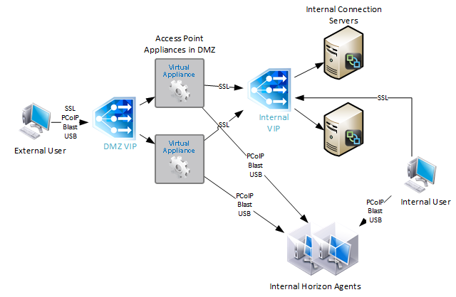
During UAG configuration, you specify the address of the internal Connection Servers. The address you enter should be a DNS name that resolves to an internal load balancing VIP for the Connection Servers.
If you have split DNS, you can use the same DNS name for both external UAG access, and for internal Connection Server load balancing. Externally, configure the DNS name to resolve to the UAG Load Balancing VIP. Internally, configure the DNS name to resolve to the internal VIP that load balances the Connection Servers.
For Cloud Pod Architecture, configure separate VIPs in each datacenter. Then configure NetScaler SLB to resolve a single DNS name to multiple VIPs.
Protocols/Ports
To support Blast Extreme, PCoIP, and HTML Blast connectivity, the following ports must be load balanced to the UAGs:
- TCP 443
- UDP 443
- TCP 4172
- UDP 4172
- TCP 8443
- UDP 8443
The initial connection to UAG is always TCP 443 (HTTPS). If a user is load balanced on port 443 to a particular UAG, then the connection on UDP 4172 must go the same UAG. Normally load balancing persistence only applies to a single port number, so whatever UAG was selected for port 443, won't be considered for the 4172 connection. But in NetScaler, you can configure a Persistency Group to use a single persistency across multiple load balancing Virtual Servers with different port numbers. In F5, you configure Match Across Services, as detailed by Aresh Sarkari at Persistence Profile - F5 LTM Load Balancing for VMware Unified Access Gateway Appliance.
This topic primarily focuses on NetScaler GUI configuration. Alternatively, you can skip directly to the CLI commands.
Load Balancing Monitors
Users connect to Unified Access Gateway appliances on multiple ports: TCP 443, UDP 443, TCP 8443, UDP 8443, TCP 4172, and UDP 4172. Create Load Balancing Monitors for each port number. Since UDP can't be easily monitored, use TCP monitors as substitutes for UDP. That means you only need four monitors:
-
TCP 443 - HTTPS
- HEAD /favicon.ico or GET /favicon.ico. This string can detect if UAG is in Quiesce mode, or if Connection Server is disabled in Horizon Console. See Omnissa 56636 for supported monitoring strings.
- TCP 4172
- TCP 8443
The procedure for configuring monitors changed in NetScaler 12.0 build 56 and newer.
SSL (443) Monitor for Connection Server Health
- On the left, expand Traffic Management, expand Load Balancing, and click Monitors.
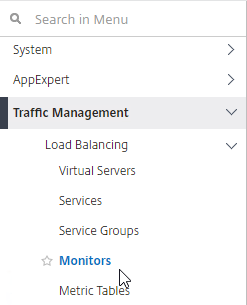
- On the right, click Add.
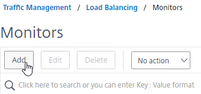
- Name it Horizon-SSL or similar.
- In the Type field, click where it says Click to select.
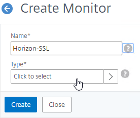
- In the Monitor Types list, click the circle next to HTTP.
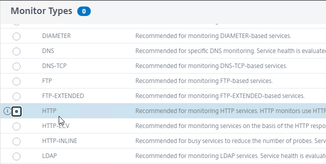
- Scroll up and click the blue Select button.
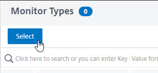
- To reduce UAG CPU, Omnissa recommends setting the Interval to 30 seconds.
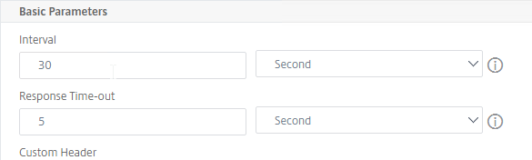
- In the HTTP Request field, enter GET /favicon.ico. See Omnissa 56636 for supported health monitoring requests.
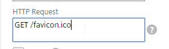
- Check the box next to Secure.
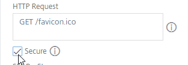
- Scroll down and click Advanced Parameters to expand it.
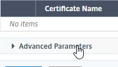
- In the Advanced Parameters section, in the Destination Port field, enter 443.
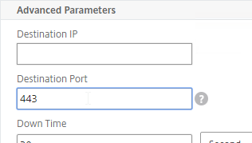
- Scroll down to the TROFS Code field and enter 503. When UAG is in Quiesce mode, TROFS will cause the service to transition to out of service allowing existing connections instead of directly going down and killing existing sessions. (h/t Henry Heres)
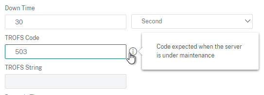
- Scroll down, and click Create.
PCoIP (4172) Monitor
- On the left, expand Traffic Management, expand Load Balancing, and click Monitors.
- On the right, click Add.
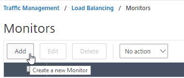
- Name it Horizon-PCoIP or similar.
- For the Type field, click where it says Click to select and select TCP from the Monitor Types list.
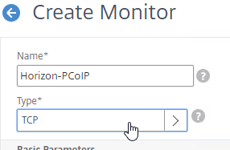
- Scroll down to Advanced Parameters, click Advanced Parameters to expand it, and then enter 4172 in the Destination Port field. This forces the monitor to connect to port 4172 even if the monitor is bound to a service group that is configured for a different port number.
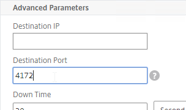
- Scroll down, and click Create.
Blast (8443) Monitor
- On the left, expand Traffic Management, expand Load Balancing, and click Monitors.
- On the right, click Add.
- Name it Horizon-Blast or similar.
- For the Type field, click where it says Click to select and select TCP from the Monitor Types list.
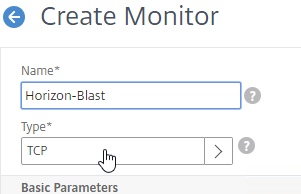
- Scroll down to Advanced Parameters, click Advanced Parameters to expand it, and then enter 8443 in the Destination Port field. This forces the monitor to connect to port 8443 even if the monitor is bound to a service group that is configured for a different port number.
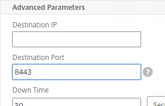
- Scroll down, and click Create.
UAG DDoS
NetScaler Monitors might trigger UAG's DDoS protection. To stop this:
- Point your browser to the UAG appliance's admin interface using https, port 9443 and path /admin.
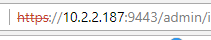
- Login to the admin interface.
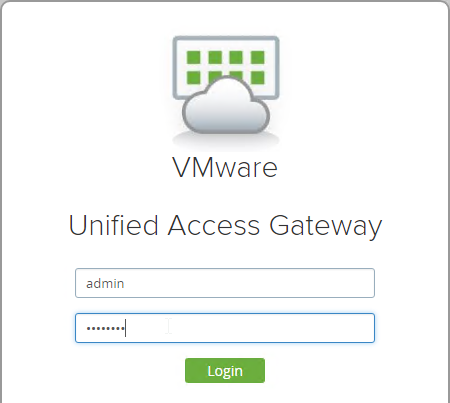
- On the right, under Configure Manually, click Select.
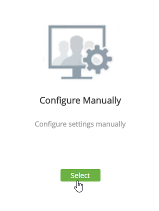
- In the Advanced Settings section, click the gear icon for System Configuration.
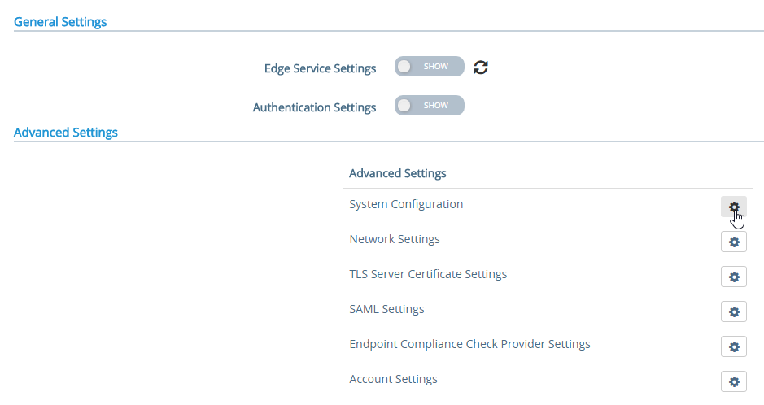
- Scroll down.
- Change Request Timeout to 0.
- Change Body Receive Timeout to 0.
- Click Save.
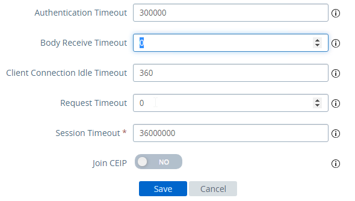
Load Balancing Servers
Create Load Balancing Server Objects for the DMZ Unified Access Gateway appliances.
- On the left, expand Traffic Management, expand Load Balancing, and click Servers.
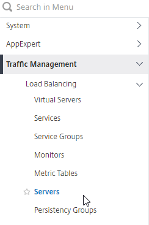
- On the right, click Add.
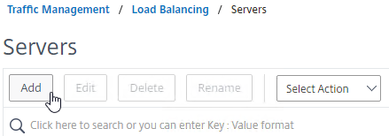
- Enter a descriptive server name, usually it matches the actual appliance name.
- Enter the IP address of a Unified Access Gateway appliance.
- Enter comments to describe the server. Click Create.
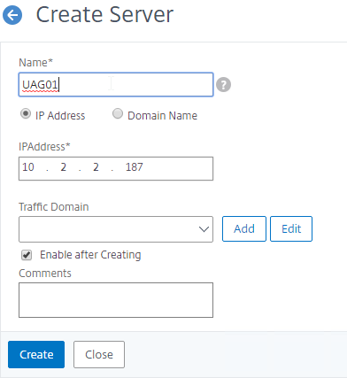
- Continue adding Unified Access Gateway appliances.
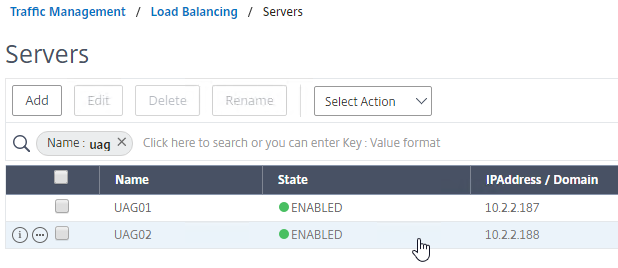
Load Balancing Service Groups
Overview
Since there are six protocol/ports to UAG, there will be six service groups - one for each protocol/port:
- TCP 443 - SSL_BRIDGE
- UDP 443
- UDP 4172
- TCP 4172
- TCP 8443 - SSL_BRIDGE
- UDP 8443
Users will initially connect to TCP port 443, and then must be redirected to one of the other ports on the same UAG appliance that was initially used for the TCP 443 connection. If TCP 443 is up, but UDP 4172 is down on the same appliance, then you probably TCP 443 to go down too. To facilitate this, bind all three port number monitors to the TCP 443 service. If any of the bound monitors goes down, then TCP 443 is also taken down.
- Only the TCP 443 service group needs to monitor all port numbers.
- Other port number service groups only need to monitor that specific port number. For example, the TCP 8443 Service Group should monitor port TCP 8443.
- Since UDP is difficult to monitor, the UDP Service Groups will monitor the equivalent TCP port. For example, the UDP 4172 Service Group will monitor TCP 4172. This isn't the best option, but it's better than ping.
TCP 443 Load Balancing Service Group
- On the left, expand Traffic Management, expand Load Balancing, and click Service Groups.
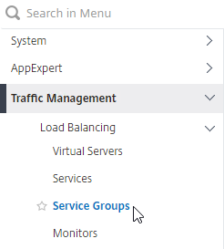
- On the right, click Add.
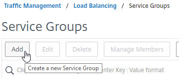
- Give the Service Group a descriptive name (e.g. svcgrp-Horizon-SSL).
- Change the Protocol to SSL_BRIDGE.
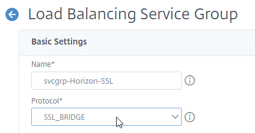
- Click OK to close the Basic Settings section.
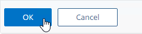
- On the left, in the Service Group Members section, click where it says No Service Group Member.
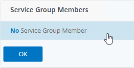
- Change the selection to Server Based.
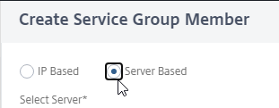
- In the Select Server field, click where it says Click to select.
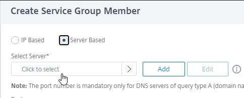
- Select the Unified Access Gateway appliances you created earlier, and then at the top of the page click the blue Select button.
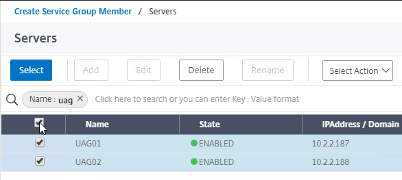
- In the Port field, enter 443, and click Create.
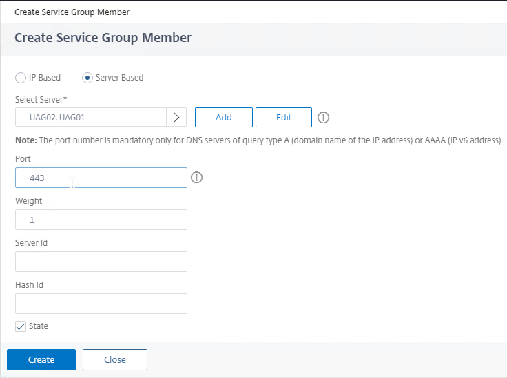
- Change the selection to Server Based.
- Click OK to close the Service Group Members section.
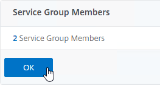
- On the right, in the Advanced Settings column, click Monitors to move it to the left.
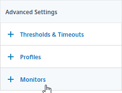
- On the left, at the bottom of the page, in the Monitors section, click where it says No Service Group to Monitor Binding.
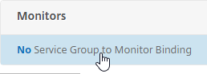
- In the Select Monitor field, click where it says Click to select.
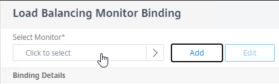
- Click the circle next to the Horizon-SSL monitor, and then at the top of the page click the blue Select button.
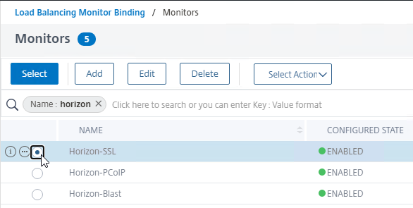
- Click Bind.
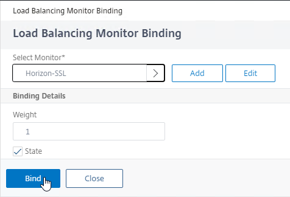
- In the Select Monitor field, click where it says Click to select.
-
For load balancing UAGs, this Service Group should monitor all port numbers so that if any of the port numbers are down then the entire server should no longer receive connections. If load balancing internal Connection Servers, then you don't need to bind any more monitors since the PCoIP Gateway and Blast Gateway are usually disabled. To bind more monitors, on the left, click where it says 1 Service Group to Monitor Binding.
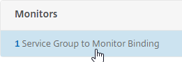
- Click Add Binding.
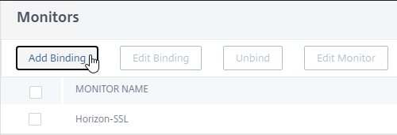
- In the Select Monitor field, click where it says Click to select.
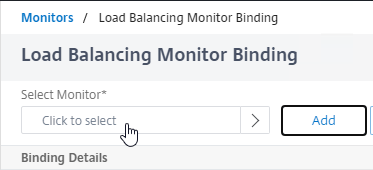
- Click the circle next to the Horizon-PCoIP monitor, and then at the top of the page click the blue Select button.
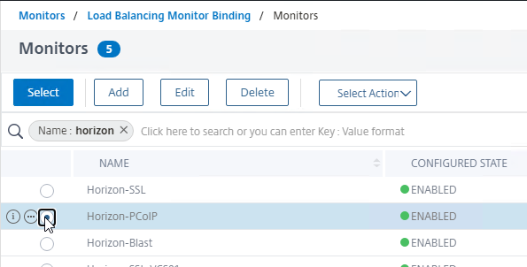
- Then click Bind.
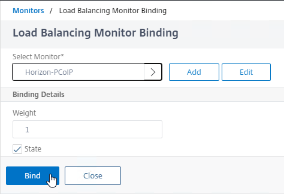
-
Repeat these steps to bind the Horizon-Blast monitor. Unfortunately you can only bind one monitor at a time.
- If any of these monitors goes down, then the UAG is taken offline.
- Click Close.
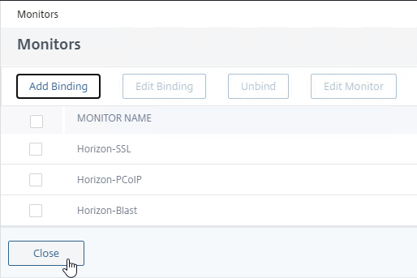
- Click Close.
- To verify the monitors, on the left, higher up the page in the Service Group Members section, click the line that says # Service Group Members.
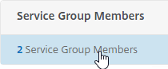
- Right-click one of the members, and click Monitor Details.
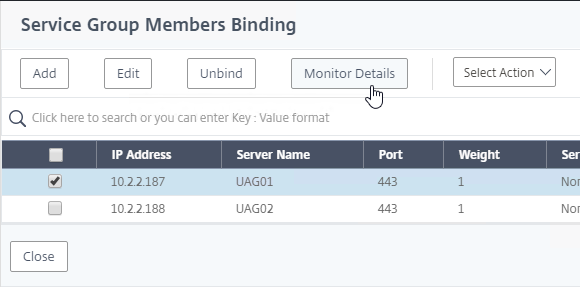
- The Last Response should indicate Success. If you bound multiple monitors to the Service, then the member will only be UP if all monitors succeed.
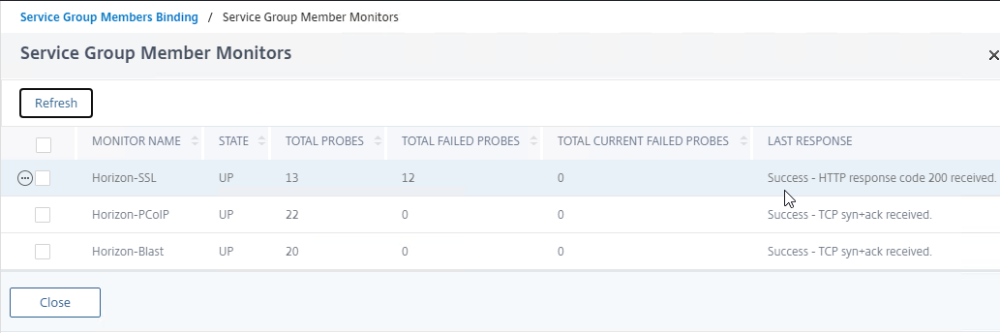
- Right-click one of the members, and click Monitor Details.
- UAG has a Quiesce mode, which tells the load balancer to stop sending it connections. You can enable Quiesce mode in the UAG's System Configuration menu.
- Connection Servers can be disabled.
-
If Quiesce mode is enabled on the UAG, or if the Connection Server is disabled, then the member of the service group will show Going Out of Service. You can see this by right-clicking on the Server Group and clicking Manage Members.
- If any of these monitors goes down, then the UAG is taken offline.
-
Click Close when done.
- Then click Done to finish creating the Service Group.
- Click Add Binding.
Other Ports Load Balancing Service Groups
Here are general instructions for the other Horizon UAG load balancing service groups.
- On the left, go to Traffic Management > Load Balancing > Service Groups.

- On the right, click Add.

- Name it svcgrp-Horizon-UDP443 or similar.
- Change the Protocol to UDP. Click OK to close the Basic Settings section.
- On the left, click where it says No Service Group Member.
- Change the selection to Server Based, and then click Click to select.
- Select your multiple Unified Access Gateway appliances, and then at the top of the page click the blue Select button.
- Enter 443 as the Port. Click Create.
- Change the selection to Server Based, and then click Click to select.
- Click OK to close the Service Group Members section.
- On the right, in the Advanced Settings column, click Monitors to move it to the left.
- On the left, in the Monitors section, click where it says No Service Group to Monitor Binding.
- For the Select Monitor field, click where it says Click to select.
- Select the Horizon-SSL monitor, click Select, and then click Bind. Since we don't have a UDP monitor, we're binding the TCP monitor instead.
- On the left, in the Monitors section, click where it says No Service Group to Monitor Binding.
- Click Done to finish creating the Service Group for UDP 443.
-
Add another Service Group for PCoIP on TCP 4172.
- Name = svcgrp-Horizon-PCoIPTCP or similar.
- Protocol = TCP
- Members = multiple Unified Access Gateway appliances.
- Port = 4172.
- Monitors = Horizon-PCoIP. You can add the other monitors if desired.
-
Add another Service Group for PCoIP on UDP 4172.
-
Name = svcgrp-Horizon-PCoIPUDP or similar.
- Protocol = UDP
- Members = multiple Unified Access Gateway appliances
- Port = 4172.
- Monitors = Horizon-PCoIP. You can add the other monitors if desired.
-
Add another Service Group for SSL_BRIDGE 8443.
-
Name = svcgrp-Horizon-TCP8443 or similar.
- Protocol = SSL_BRIDGE
- Members = multiple Unified Access Gateway appliances
- Port = 8443.
- Monitors = Horizon-Blast. You can add the other monitors if desired.
-
Add another Service Group for UDP 8443 (Blast Extreme in Horizon 7).
-
Name = svcgrp-Horizon-UDP8443 or similar.
- Protocol = UDP
- Members = multiple Unified Access Gateway appliances
- Port = 8443.
- Monitors = Horizon-Blast. You can add the other monitors if desired.
- The six service groups should look something like this:
Load Balancing Virtual Servers
Unified Access Gateway appliances listen on multiple ports so you will need separate load balancers for each port number. Here is a summary of their Virtual Servers, all listening on the same Virtual IP address:
- Virtual Server on SSL_BRIDGE 443 – bind the SSL_BRIDGE 443 service group.
- Virtual Server on UDP 443 (Horizon 7) - bind the UDP 443 service group.
- Virtual Server on UDP 4172 – bind the PCoIP UDP service group.
- Virtual Server on TCP 4172 – bind the PCoIP TCP service group.
- Virtual Server on SSL_BRIDGE 8443 – bind the SSL_BRIDGE 8443 service group.
- Virtual Server on UDP 8443 (Horizon 7) - bind the UDP 8443 service group.
Do the following to create the Virtual Servers:
- On the left, under Traffic Management > Load Balancing, click Virtual Servers.
- On the right, click Add.
-
In the Basic Settings section:
- Name it lbvip-Horizon-SSL or similar.
- Change the Protocol to SSL_BRIDGE.
- Specify a new VIP. This one VIP will be used for all of the Virtual Servers.
- Enter 443 as the Port.
- Click OK to close the Basic Settings section.
- On the left, in the Services and Service Groups section, click where it says No Load Balancing Virtual Server ServiceGroup Binding.
- Click where it says Click to select.
- Click the circle next to the Horizon-SSL Service Group, and then at the top of the page click the blue Select button.
- Click Bind.
- Click Continue to close the Services and Service Groups section.
- Then click Done to finish creating the Load Balancing Virtual Server. Persistence will be configured later.

- Create another Load Balancing Virtual Server for UDP 443. You can right-click the existing Load Balancing Virtual Server and click Add to copy some settings.
- Name = lbvip-Horizon-UDP443
- Same VIP as the TCP 443 Load Balancer.
- Protocol = UDP, Port = 443
- Service Group Binding = the UDP 443 Service Group
-
Create another Load Balancing Virtual Server for PCoIP UDP 4172:
-
Name = lbvip-Horizon-PCoIPUDP
- Same VIP as the 443 Load Balancer.
- Protocol = UDP, Port = 4172
- Service Group Binding = the PCoIP UDP Service Group.
-
Create another Load Balancing Virtual Server for PCoIP TCP 4172:
-
Name = lbvip-Horizon-PCoIPTCP
- Same VIP as the 443 Load Balancer.
- Protocol = TCP, Port = 4172
- Service Group Binding = the PCoIP TCP Service Group
-
Create another Load Balancing Virtual Server for SSL_BRIDGE 8443:
-
Name = lbvip-Horizon-8443SSL
- Same VIP as the 443 Load Balancer.
- Protocol = SSL_BRIDGE, Port = 8443
- Service Group Binding = the TCP 8443 SSL_BRIDGE Service Group
-
Create another Load Balancing Virtual Server for UDP 8443:
-
Name = lbvip-Horizon-8443UDP
- Same VIP as the 443 Load Balancer.
- Protocol = UDP, Port = 8443
- Service Group Binding = the UDP 8443 Service Group
- This gives you six Load Balancing Virtual Servers on the same VIP, but different protocols and port numbers.
Persistency Group
Users will first connect to SSL_BRIDGE 443 and be load balanced. Subsequent connections to the other port numbers must go to the same load balanced appliance. Create a Persistency Group to facilitate this.
- On the left, under Traffic Management, expand Load Balancing, and click Persistency Groups.
- On the right, click Add.
- Give the Persistency Group a name (e.g. Horizon).
- Change the Persistence drop-down to SOURCEIP.
- Enter a Time-out that is equal to, or greater than the timeout in Horizon View Administrator, which defaults to 10 hours (600 minutes).
- In the Virtual Server Name section, click Add.
- Move all six Horizon Load Balancing Virtual Servers to the right. Click Create.
Horizon Connection Server Locked.properties File
Horizon Connection Server's default security settings might prevent you from connecting to load balanced Connection Servers and/or Unified Access Gateways. On the Connection Servers, go to C:\Program Files\Omnissa\Horizon\Server\sslgateway\conf (or C:\Program Files\VMware\VMware View\Server\sslgateway\conf), edit or create locked.properties file, and enter the following:
More details at Omnissa 2144768 Accessing the Horizon View Administrator page displays a blank error window in Horizon and 85801 Cross-Origin Resource Sharing (CORS) with Horizon 8 and loadbalanced HTML5 access. allowUnexpectedHost defaults to false in Horizon 2306 and Horizon 2212.1 and newer. Another option is to add portalHost entries as detailed at Allow HTML Access Through a Gateway at Omnissa Docs.

Load Balancing CLI Commands
Internal Connection Server Load Balancing
add server VCS01 10.2.2.19
add server VCS02 10.2.2.20
add serviceGroup svcgrp-VCS-SSL SSL_BRIDGE
add lb vserver lbvip-Horizon-SSL SSL_BRIDGE 10.2.5.203 443 -persistenceType SOURCEIP -timeout 600
bind lb vserver lbvip-Horizon-SSL svcgrp-VCS-SSL
add lb monitor Horizon-SSL HTTP -respCode 200 -httpRequest "GET /favicon.ico" -destPort 443 -secure YES
bind serviceGroup svcgrp-VCS-SSL VCS01 443
bind serviceGroup svcgrp-VCS-SSL VCS02 443
bind serviceGroup svcgrp-VCS-SSL -monitorName Horizon-SSL
Unified Access Gateway load balancing with Blast and PCoIP
add server UAG01 10.2.2.187
add server UAG02 10.2.2.188
add serviceGroup svcgrp-Horizon-SSL SSL_BRIDGE
add serviceGroup svcgrp-Horizon-UDP443 UDP
add serviceGroup svcgrp-Horizon-PCoIPTCP TCP
add serviceGroup svcgrp-Horizon-PCoIPUDP UDP
add serviceGroup svcgrp-Horizon-TCP8443 SSL_BRIDGE
add serviceGroup svcgrp-Horizon-UDP8443 UDP
add lb vserver lbvip-Horizon-SSL SSL_BRIDGE 10.2.5.204 443
add lb vserver lbvip-Horizon-UDP443 UDP 10.2.5.204 443
add lb vserver lbvip-Horizon-PCoIPUDP UDP 10.2.5.204 4172
add lb vserver lbvip-Horizon-PCoIPTCP TCP 10.2.5.204 4172
add lb vserver lbvip-Horizon-8443SSL SSL_BRIDGE 10.2.5.204 8443
add lb vserver lbvip-Horizon-8443UDP UDP 10.2.5.204 8443
bind lb vserver lbvip-Horizon-SSL svcgrp-Horizon-SSL
bind lb vserver lbvip-Horizon-UDP443 svcgrp-Horizon-UDP443
bind lb vserver lbvip-Horizon-PCoIPTCP svcgrp-Horizon-PCoIPTCP
bind lb vserver lbvip-Horizon-PCoIPUDP svcgrp-Horizon-PCoIPUDP
bind lb vserver lbvip-Horizon-8443SSL svcgrp-Horizon-TCP8443
bind lb vserver lbvip-Horizon-8443UDP svcgrp-Horizon-UDP8443
add lb group Horizon -persistenceType SOURCEIP -timeout 600
bind lb group Horizon lbvip-Horizon-SSL
bind lb group Horizon lbvip-Horizon-UDP443
bind lb group Horizon lbvip-Horizon-PCoIPUDP
bind lb group Horizon lbvip-Horizon-PCoIPTCP
bind lb group Horizon lbvip-Horizon-8443SSL
bind lb group Horizon lbvip-Horizon-8443UDP
set lb group Horizon -persistenceType SOURCEIP -timeout 600
add lb monitor Horizon-SSL HTTP -respCode 200 -httpRequest "GET /favicon.ico" -destPort 443 -secure YES -trofscode 503
add lb monitor Horizon-PCoIP TCP -LRTM DISABLED -destPort 4172 -secure YES
add lb monitor Horizon-Blast TCP -LRTM DISABLED -destPort 8443 -secure YES
bind serviceGroup svcgrp-Horizon-SSL UAG01 443
bind serviceGroup svcgrp-Horizon-SSL UAG02 443
bind serviceGroup svcgrp-Horizon-SSL -monitorName Horizon-SSL
bind serviceGroup svcgrp-Horizon-SSL -monitorName Horizon-PCoIP
bind serviceGroup svcgrp-Horizon-SSL -monitorName Horizon-Blast
bind serviceGroup svcgrp-Horizon-UDP443 UAG01 443
bind serviceGroup svcgrp-Horizon-UDP443 UAG02 443
bind serviceGroup svcgrp-Horizon-UDP443 -monitorName Horizon-SSL
bind serviceGroup svcgrp-Horizon-PCoIPTCP UAG01 4172
bind serviceGroup svcgrp-Horizon-PCoIPTCP UAG02 4172
bind serviceGroup svcgrp-Horizon-PCoIPTCP -monitorName Horizon-PCoIP
bind serviceGroup svcgrp-Horizon-PCoIPUDP UAG01 4172
bind serviceGroup svcgrp-Horizon-PCoIPUDP UAG02 4172
bind serviceGroup svcgrp-Horizon-PCoIPUDP -monitorName Horizon-PCoIP
bind serviceGroup svcgrp-Horizon-TCP8443 UAG01 8443
bind serviceGroup svcgrp-Horizon-TCP8443 UAG02 8443
bind serviceGroup svcgrp-Horizon-TCP8443 -monitorName Horizon-Blast
bind serviceGroup svcgrp-Horizon-UDP8443 UAG01 8443
bind serviceGroup svcgrp-Horizon-UDP8443 UAG02 8443
bind serviceGroup svcgrp-Horizon-UDP8443 -monitorName Horizon-Blast